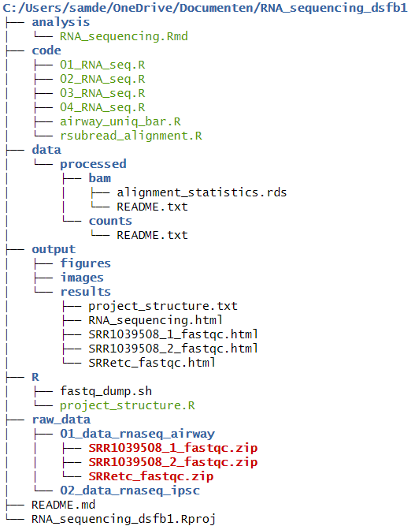

2 Project directory restructure
2.1 Formatieve opdracht DAUR2
During the first halve of the Data Science For Biology (DSFB) course we did a project on RNA-sequencing. During that time I had not jet had the pleasure of learning about the Guerilla Analiytics rules for data management. Now looking back I could have made my own life much easier if I knew how to structure my directory’s better. Luckily I get the chance to do so now.
Table 1: A quick overview of the Guerrilla Analytics and literate programming practices.
| Principle | Implementation |
|---|---|
| Project Isolation | One RStudio Project (.Rproj) per unit of analysis or sub-project. |
| Shallow Hierarchy | Limit folder depth to 2-3 levels to avoid complexity. |
| Version Control of Data | Each dataset lives in its own raw_data/DataXXX/ folder. Old versions are moved to v01/, v02/, etc. |
| Documentation Close to Data | Each DataXXX/ folder has a README.txt and optionally an .md5 file. |
| No Manual Changes | All data changes occur via code. The original file remains untouched. |
| Relative Paths | Use here::here() or {targets} for robust path resolution. |
| Code Separation | Place reusable functions in R/, scripts in code/ or inst/. |
| Literate Programming | Use .Rmd for analyses, placed in analysis/. |
2.1.1 RNA-sequence project restructure

Figure 1: A reconstructed RNA-sequence project directory adhering to the Guerrilla Analytics principles.
2.1.2 README file
Below we can see a screen grab of the README.md file attached to the RNA-sequencing project.
# RNA sequencing project
In this project the gene expression difference between induced
pluripotent stamcells (iPSC) and fibroblasts is analyzed.
## Guiding Practices for Reproducible Project Organization in R
| Principle | Implementation |
| ------------------------------- | ------------------------------- |
| **Project Isolation** | One RStudio Project (`.Rproj`) per unit of analysis or sub-project. |
| **Shallow Hierarchy** | Limit folder depth to 2-3 levels to avoid complexity. |
| **Version Control of Data** | Each dataset lives in its own `raw_data/DataXXX/` folder. Old versions are moved to `v01/`, `v02/`, etc. |
| **Documentation Close to Data** | Each `DataXXX/` folder has a `README.txt` and optionally an `.md5` file. |
| **No Manual Changes** | All data changes occur via code. The original file remains untouched. |
| **Relative Paths** | Use `here::here()` or `{targets}` for robust path resolution. |
| **Code Separation** | Place reusable functions in `R/`, scripts in `code/` or `inst/`. |
| **Literate Programming** | Use `.Rmd` for analyses, placed in `analysis/`. |
## Folder Structure
- `raw_data/`: Raw, unmodified data files
- `data/`: Cleaned, analysis-ready datasets
- `code/`: Modular R scripts
- `R/` : R functions for easy excess
- `analysis/`: R Markdown reports
- `output/`: Visualizations and results
## How to Run
1. Open `RNA_sequencing_dsfb1.Rproj`
2. Run the scripts in `code/`
3. Render `analysis/RNA_sequencing.Rmd` for results